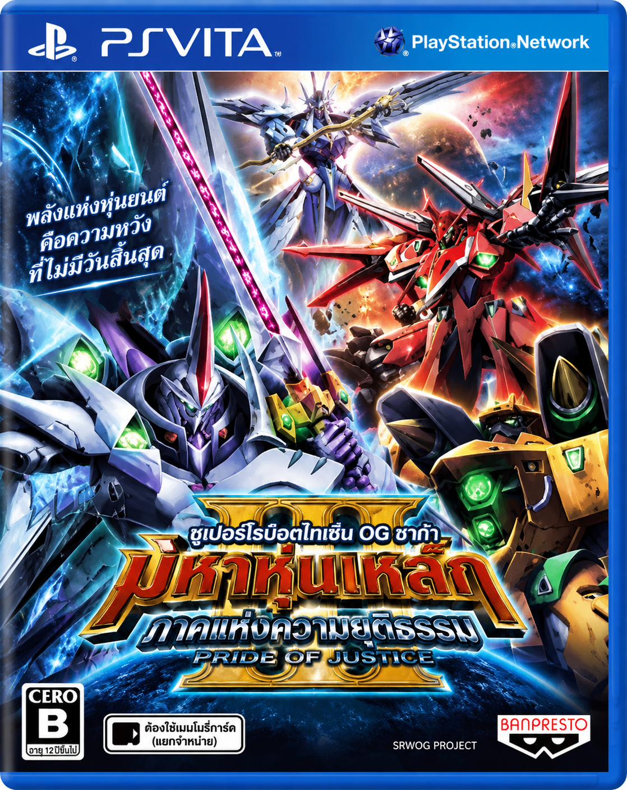

SUPER ROBOT WARS OG SAGA
Masou Kishin III
PRIDE OF JUSTICE
ศึกแห่งหุ่นรบและเหล่าผู้ขับ
กลับมาเล่าเรื่องเป็นภาษาไทย
เกมวางแผนการรบแบบผลัดตาในโลกลาเกียส บัญชาการเหล่าเทพอสูร จัดทีม เลือกอาวุธ และต่อสู้เคียงข้างมาซากิกับพวกพ้อง
โดยเพจแปลเกมเก่า · ชุดไฟล์ภาษาไทยและฟอนต์จากโปรเจกต์ปัจจุบัน ไม่รวม Update และ DLC
ดาวน์โหลด rePatch สำหรับเครื่อง VitaZIP ประมาณ 6.5 MB · มีวิธีติดตั้งและรายการตรวจไฟล์
สร้างในเครื่องของคุณ
แพตช์ออนไลน์
เลือกโฟลเดอร์เกมต้นฉบับที่ถอดรหัสแล้ว ระบบจะอ่านเฉพาะไฟล์ที่ต้องใช้และสร้างชุด rePatch ภาษาไทย ไฟล์เกมไม่ถูกอัปโหลด
กำลังโหลดรายการไฟล์…
กำลังเตรียมเครื่องมือ…
ใช้ต้นฉบับ PCSG00190 รุ่น 1.00 ที่ตรงกับชุดนี้ เว็บตรวจเนื้อหาไฟล์ก่อนสร้างผลลัพธ์ หากมีไฟล์ไม่ตรงจะหยุดและแจ้งชื่อไฟล์
ไม่มีโฟลเดอร์ต้นฉบับบนคอมพิวเตอร์?
ใช้ปุ่มดาวน์โหลด rePatch ด้านบนเพื่อติดตั้งชุดที่เตรียมไว้ได้เลย ชุดออนไลน์และชุดดาวน์โหลดมีไฟล์เกมภาษาไทยชุดเดียวกัน ไม่ต้องทำทั้งสองวิธี
สถานะ v1.0
เพิ่มคำแปล Battle 8,754 ระเบียน ตรวจข้อความ Battle ครบ 16,728 ระเบียนในไฟล์ ไม่พบกลิฟญี่ปุ่นหรือกลิฟที่อ่านไม่ได้ ยังไม่ใช่การรับรองความหมายคำแปลเดิมทุกประโยคหรือทุกส่วนของเกม
เปิดเกม โหลดเซฟ และเห็นบทพูดไทยช่วงต้นบน Vita3K Windows ได้แล้ว ยังไม่ได้เล่นตรวจครบทุกฉากหรือทดสอบบนเครื่อง Vita จริง
ข้อสังเกตจากการทดสอบ
พบจุดสงสัยหยุดรอหลังหุ่นเสริมเข้าฉากบนแผนที่ ยังแยกสาเหตุจากการส่งปุ่มของเครื่องมือไม่ได้ และยังไม่ได้ยืนยันเส้นทางป้องกันเพื่อน เลขรุ่น v1.0 คือรุ่นเผยแพร่ ไม่ใช่การรับรองว่าปราศจากปัญหาทั้งเกม